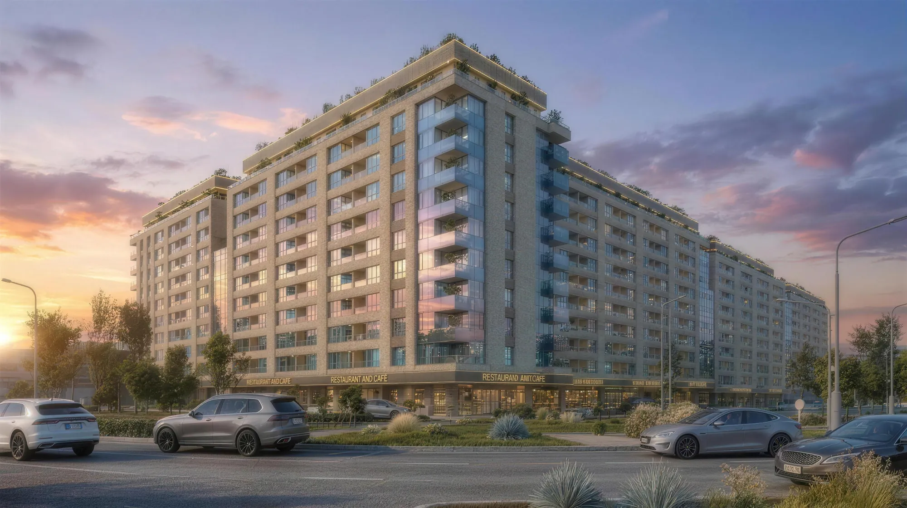

Zemun · Beograd
Blue Danube Promenade
Jedna zgrada. Osam lamela. Zajedničko unutrašnje dvorište.
U fokusu prodajeLamele 5 i 6 · Stanovi do 50 m²
Pronađite stanCeo kompleks
- stan
- 1 291
- poslovna prostora
- 93
- spratnost
- P+9+Ps
Zemun, obod naselja Altina
01 Lokacija
Na obodu Altine, u Zemunu
Kompleks se nalazi na obodu naselja Altina, u opštini Zemun. Okružuju ga magistrala T6, auto-put Beograd – Novi Sad i ulice S126 i S133 – Ratarski put.
Sa druge strane je gusto tkivo pojedinačnih stambenih objekata. U neposrednoj blizini nalazi se Regionalni poštanski centar Pošte Srbije.
- T6 – magistrala
- Auto-put Beograd – Novi Sad
- S126 – planirana ulica
- S133 – Ratarski put
02 Zgrada-blok
Jedna zgrada oko jednog dvorišta
Osam lamela spojeno je u zatvoreni gradski blok. Unutrašnje dvorište je polu-privatno i namenjeno pre svega stanarima, a do njega se stiže kroz pešačke pasaže u nivou prizemlja.
- 8
- lamela
- 1
- unutrašnje dvorište
- 3
- pasaža ka dvorištu
- Lamele 5 i 6 – u fokusu prodaje, stanovi do 50 m²
- Ostale lamele kompleksa
Lamela 1
Duž ulice S126 · 18,5 × 57 m · 167 stanova, 10 lokala
03 Arhitektura
P + 9 + Ps
Prizemlje, devet spratova i povučeni sprat. Ispod zgrade su četiri podzemne etaže.
- Visina venca
- ≈ 31 m
- Maksimalna visina
- 36,5 m
- Spratna visina, od poda do poda
- 2,90 m
Čista forma pravilnog kubusa, ravni krovovi bez streha. Fasade kombinuju dekorativne maltere različitih nijansi, crnu bravariju i staklo, a lođe su usečene u fasadna platna i krovne vence. Kalkanski zidovi lamela tretirani su kao uređeni deo fasade, sa otvorima.


04 Prizemlje
93 poslovna prostora
Lokali za trgovinu i usluge otvoreni su ka okolnim ulicama i ka dvorištu, a da pritom ne remete mir unutrašnje pešačke zone. Na vizualizaciji – restorani i kafei.
Vizualizacije su preliminarne; večernja i dnevna verzija prikazane su iz različitih uglova.
05 Dvorište
Dvorište unutar bloka – za šetnju i odmor

Popločani platoi ispred ulaza u lamele povezani su pešačkim stazama u blagom nagibu. Između lamela su zelene površine različitih nivoa privatnosti.
Za popločanje su predviđeni opeka i kamene lajsne, a mobilijar čine crne metalne žardinjere i drvene klupe. Slobodne i zelene površine zauzimaju 40,4 % parcele.


Dnevne zone stanova izlaze na lođe ili terase.
Pogled iz pojedinačnog stana zavisi od lamele i sprata – detalji su u pripremi.


06 Brojke · ceo kompleks
Ceo kompleks u brojkama
-
1 291
stan
U celom kompleksu – od jednosobnih do četvorosobnih, 33–158 m²
-
93
poslovna prostora
U prizemlju lamela i u aneksu
-
1 605
parking mesta
1 561 u podzemnoj garaži na tri nivoa i 44 na parceli
-
40,4%
parcele – slobodne i zelene površine
7 757 m² od ukupno 19 198 m² površine parcele
Ukupna bruto površina – 150 028 m², od toga nadzemna – 97 367 m²
07 Izbor stanova
Stanovi do 50 m² u lamelama 5 i 6
U fokusu prodaje su lamele 5 i 6. Izdvojili smo stanove do 50 m² na 7. spratu – za svaki je dostupan originalni list sa osnovom.
23 stana
Nema stanova za izabrane filtere
Promenite lamelu, površinu ili orijentaciju – ili poništite sve filtere.
- Cene
- u pripremi
- Status stanova
- biće objavljen naknadno
- Rokovi
- u pripremi
Prikazani su stanovi do 50 m² sa 7. sprata u lamelama 5 i 6. Površine i orijentacija preuzeti su sa originalnih listova; isečci osnova napravljeni su sa istih listova, bez izmena crteža.
08 Zahtev
Zatražite prezentaciju
Ostavite kontakt – poslaćemo vam materijale o projektu čim budu spremni i rado ćemo odgovoriti na vaša pitanja.
Zahtev je primljen
Demo režim: forma nije povezana sa CRM-om, podaci nisu nigde poslati.